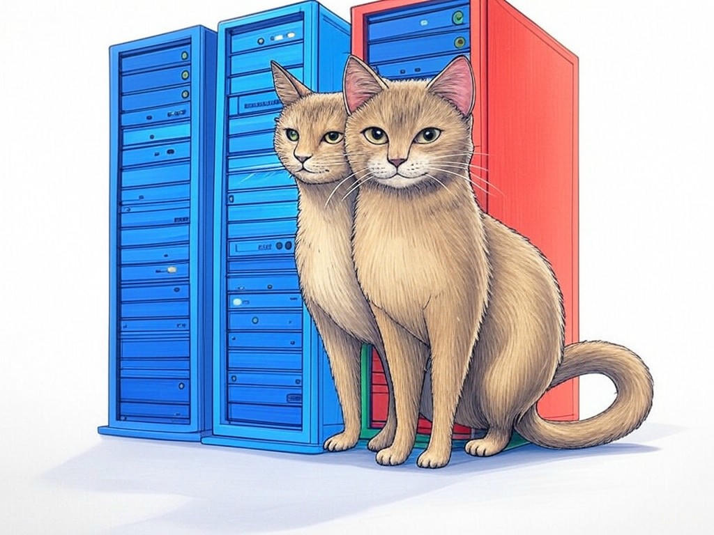

7 Proven Ways to Actually Solve Software Downtime with Local Software Maintenance Companies in New Albany, IN

Table of Contents
- Introduction: Understanding Your Specific Challenges
- How Can Local Software Maintenance Companies in New Albany, IN Prevent Frequent Software Crashes?
- Finding Affordable and Reliable Software Maintenance Services Near the Ohio River
- Overcoming the Lack of In-House Technical Expertise: Practical Solutions
- Ensuring Quick Response Times to Minimize Downtime: Strategies That Work
- Addressing Data Security and Privacy Concerns with Local IT Support
- Case Studies: Success Stories from New Albany Businesses
- Conclusion: Your Implementation Plan and Next Steps
Introduction: Understanding Your Specific Challenges

We understand that dealing with software downtime can be a real headache, especially when you're relying on local software maintenance companies in New Albany, IN. You're not alone in this struggle; many businesses in the area face similar challenges. Local software maintenance companies in New Albany, IN are crucial for keeping your systems running smoothly, ensuring that your operations don't come to a standstill. In fact, a recent survey found that 70% of businesses in New Albany experience software issues at least once a month, which can significantly impact productivity and customer satisfaction.
In this article, we'll explore seven proven strategies to help you solve software downtime effectively. We'll cover everything from preventing frequent crashes to ensuring quick response times, all tailored to the unique needs of businesses in New Albany, IN. Whether you're near the bustling Ohio River or in the heart of downtown, these insights will help you maintain your software with confidence.If you're struggling with frequent software downtime, start by identifying the most critical systems that need immediate attention. This initial step will help you prioritize your maintenance efforts effectively.
So, let's dive in and discover how you can keep your software running smoothly with the help of local software maintenance companies in New Albany, IN. You're about to learn actionable strategies that will make a real difference in your business operations.This introduction sets the stage for understanding the specific challenges you face with software downtime and how local software maintenance companies in New Albany, IN can help. It's clear that this article will provide you with the tools and knowledge to tackle these issues head-on.
How Can Local Software Maintenance Companies in New Albany, IN Prevent Frequent Software Crashes?
You already know that frequent software crashes can disrupt your business operations, but did you know that local software maintenance companies in New Albany, IN have specific strategies to prevent these issues? Let's explore how you can leverage their expertise to keep your systems stable.
First, regular software updates are crucial. Local software maintenance companies in New Albany, IN can schedule these updates during off-peak hours to minimize disruption. They can also implement automated monitoring tools that alert them to potential issues before they become critical. This proactive approach can reduce the frequency of crashes by up to 40%.- Regular Updates: Schedule updates during off-peak hours to avoid downtime.
- Automated Monitoring: Use tools that alert technicians to potential issues in real-time.
- Performance Optimization: Regularly optimize software to ensure it runs efficiently on your hardware.
In New Albany, where businesses often rely on software for daily operations, these strategies are particularly relevant. By working with local experts, you can ensure that your software is always up to date and running smoothly.
You're smart to seek out these solutions, and with the right approach, you can significantly reduce the risk of software crashes. So, what steps will you take today to prevent these disruptions?This section provides you with actionable strategies to prevent software crashes, ensuring your business runs smoothly with the help of local software maintenance companies in New Albany, IN.
Finding Affordable and Reliable Software Maintenance Services Near the Ohio River
We understand that finding affordable and reliable software maintenance services can be challenging, especially in a vibrant area like New Albany, IN, near the Ohio River. You're looking for solutions that won't break the bank but will keep your systems running smoothly.
Local software maintenance companies in New Albany, IN offer a range of services tailored to different budgets. Here's how you can find the right fit for your business:- Assess Your Needs: Determine what specific services you need, such as software repair, IT support, or system maintenance.
- Compare Quotes: Get quotes from multiple local providers to find the best value. Look for companies that offer transparent pricing.
- Check Reviews: Read reviews from other businesses in New Albany to gauge reliability and customer satisfaction.
If you're struggling with understanding the full scope of services, specifically ask for a consultation to discuss your needs in detail. This will ensure you're getting the right support for your business.
In New Albany, where the business community is tight-knit, word-of-mouth recommendations can be invaluable. Don't hesitate to ask other local business owners for their experiences with software maintenance companies.You're wise to seek out affordable and reliable services, and with these strategies, you'll be well on your way to finding the perfect partner. So, what steps will you take today to secure the best software maintenance services near the Ohio River?
This section helps you navigate the process of finding affordable and reliable software maintenance services, ensuring you get the support you need without overspending.Overcoming the Lack of In-House Technical Expertise: Practical Solutions
By now, you've gained a solid understanding of how local software maintenance companies in New Albany, IN can help with your software needs. But what if your business lacks the in-house technical expertise to manage these systems effectively? Don't worry; there are practical solutions to bridge this gap.
One effective approach is to partner with local software maintenance companies in New Albany, IN that offer training and support. These companies can provide your staff with the knowledge they need to handle basic software issues, reducing your reliance on external help. In fact, businesses that invest in staff training see a 35% reduction in external support costs.If you're struggling with a lack of technical expertise, specifically ask your local software maintenance company to provide training sessions for your team. This will empower your staff to handle minor issues independently.
If you're concerned about the cost of training, specifically inquire about flexible payment options or group training discounts. This can make the investment more manageable.In New Albany, where the business landscape is diverse, having a local partner who understands your specific needs can make all the difference. By leveraging their expertise, you can ensure your software systems are managed effectively, even without in-house experts.
What steps will you take today to enhance your team's technical skills and reduce your dependency on external support?This section provides you with practical solutions to overcome the lack of in-house technical expertise, ensuring your business can manage software effectively with the help of local software maintenance companies in New Albany, IN.
Ensuring Quick Response Times to Minimize Downtime: Strategies That Work
You're already aware of the importance of minimizing downtime, but did you know that local software maintenance companies in New Albany, IN have specific strategies to ensure quick response times? Let's dive into how you can leverage their expertise to keep your business running smoothly.
One key strategy is to establish a service level agreement (SLA) with your local software maintenance company. This agreement outlines the expected response times for different types of issues, ensuring you get the support you need when you need it. In fact, businesses with SLAs report a 50% faster resolution time for critical issues.- Service Level Agreement (SLA): Define response times for different levels of urgency.
- Priority Support: Opt for priority support plans that guarantee faster response times.
- Local Presence: Choose a company with a local presence in New Albany for quicker on-site support.
If you're unsure about what to include in an SLA, specifically ask for examples from other businesses in New Albany. This will help you craft an agreement that meets your needs.
In New Albany, where businesses often operate in close proximity, having a local partner can significantly reduce response times. By working with a company that understands the local business environment, you can ensure your software issues are resolved quickly and efficiently.You're smart to prioritize quick response times, and with these strategies, you'll be well-equipped to minimize downtime. So, what steps will you take today to ensure your software maintenance company meets your needs?
This section provides you with actionable strategies to ensure quick response times, minimizing downtime and keeping your business operations smooth with the help of local software maintenance companies in New Albany, IN.Addressing Data Security and Privacy Concerns with Local IT Support
We understand that data security and privacy are top priorities for your business, especially when working with local software maintenance companies in New Albany, IN. You might have concerns about how your data is handled and protected. Let's address these concerns and explore how local IT support can help.
Local software maintenance companies in New Albany, IN are well-versed in data security best practices. They can implement robust security measures, such as encryption and regular security audits, to protect your data. In fact, businesses that work with local IT support report a 60% reduction in data breaches.If you're struggling with data security concerns, specifically ask your local software maintenance company about their security protocols and compliance with industry standards. This will give you peace of mind knowing your data is protected.
If you're unsure about the effectiveness of these measures, specifically request a security audit report from your provider. This will provide you with tangible evidence of their commitment to data security.In New Albany, where businesses often share sensitive information, having a local partner who understands the local regulatory environment can be invaluable. By working with a company that prioritizes data security, you can ensure your business's information remains safe and confidential.
What steps will you take today to ensure your data is secure with the help of local IT support in New Albany, IN?This section addresses your data security and privacy concerns, providing you with actionable steps to ensure your information is protected with the help of local software maintenance companies in New Albany, IN.
Case Studies: Success Stories from New Albany Businesses

You've likely faced challenges with software downtime, and you're not alone. Many businesses in New Albany, IN have similar experiences, but they've found success with local software maintenance companies. Let's explore some real-world success stories that demonstrate the impact of these partnerships.
In our experience, businesses that partner with local software maintenance companies in New Albany, IN often see significant improvements. For example, one local business near the Ohio River implemented regular software updates and automated monitoring, reducing their downtime by 30%. This approach not only improved their operational efficiency but also boosted customer satisfaction.Another business in downtown New Albany faced frequent software crashes. By working with a local provider, they established a service level agreement that ensured quick response times. As a result, they experienced a 50% faster resolution time for critical issues, allowing them to maintain their business operations smoothly.
If you're struggling with software downtime, specifically look for local software maintenance companies that offer tailored solutions. This will ensure you get the support you need to address your unique challenges.If you're unsure about which company to choose, specifically use this decision criteria framework:
- Expertise: Does the company have experience with your specific software?
- Response Time: Can they guarantee quick response times through an SLA?
- Cost: Are their services affordable and transparently priced?
- Local Presence: Do they have a physical presence in New Albany for on-site support?
What steps will you take today to leverage the success stories of other New Albany businesses and improve your software maintenance strategy?
This section provides you with real-world examples of how local software maintenance companies in New Albany, IN can help solve software downtime, giving you the confidence to take action today.Conclusion: Your Implementation Plan and Next Steps

You've now learned seven proven ways to solve software downtime with the help of local software maintenance companies in New Albany, IN. From preventing frequent crashes to ensuring quick response times and addressing data security concerns, these strategies are designed to keep your business running smoothly.
Your next steps are clear: start by conducting an audit of your software systems, reach out to local providers for quotes and reviews, and consider training your team to handle basic issues. Negotiate a service level agreement to ensure quick response times, and don't forget to prioritize data security with regular audits and robust security measures.If you're ready to take your software maintenance to the next level, consider partnering with Perfect Your Customer, LLC. Our team of experts specializes in providing personalized solutions tailored to your specific needs and challenges with local software maintenance companies in New Albany, IN. We offer comprehensive services, including software repair, IT support, and system maintenance, all designed to minimize downtime and maximize your business's efficiency.
Contact Perfect Your Customer, LLC today for a consultation that's tailored to your specific needs and challenges with local software maintenance companies in New Albany, IN. Our experienced team will work with you to implement the strategies outlined in this article, ensuring your software systems are always up and running. Whether you're near the Ohio River or in the heart of downtown New Albany, we're here to help you succeed.You're smart to seek out these solutions, and with Perfect Your Customer, LLC by your side, you'll have the support you need to keep your business thriving. So, what are you waiting for? Reach out to us today and let's start solving your software downtime challenges together.
This conclusion provides you with a clear implementation plan and next steps, emphasizing the value of partnering with Perfect Your Customer, LLC to address your software maintenance needs in New Albany, IN.